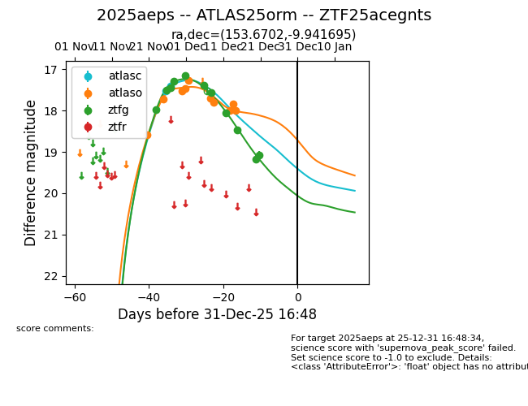
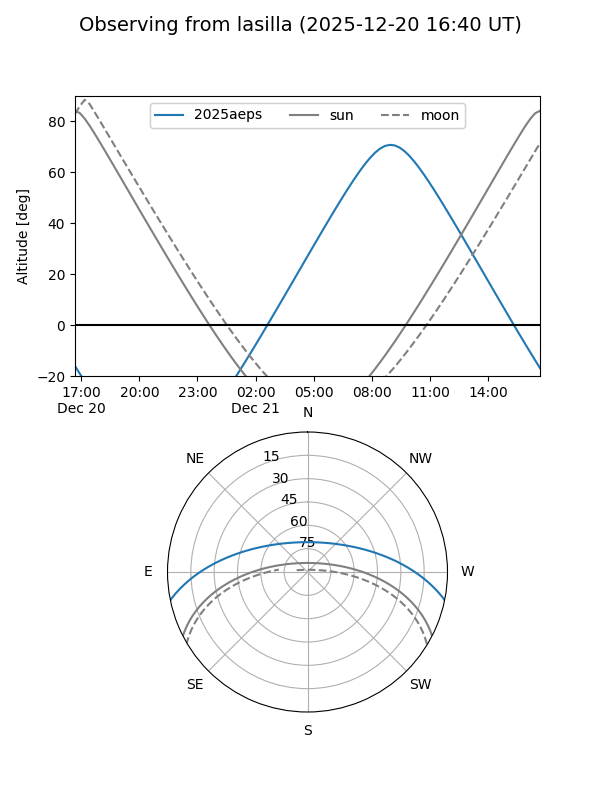
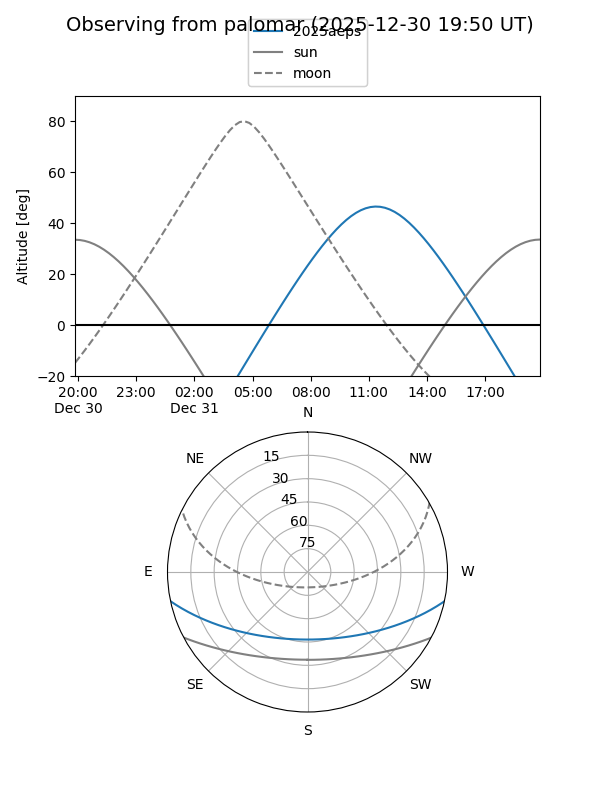
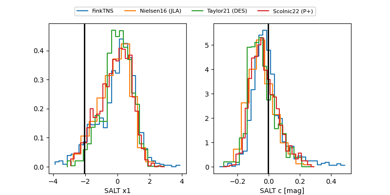

2025aeps
Target 2025aeps at 2025-12-20 13:24
Aliases and brokers:
FINK: fink-portal.org/ZTF25acegnts
Lasair: lasair-ztf.lsst.ac.uk/objects/ZTF25acegnts
ALeRCE: alerce.online/object/ZTF25acegnts
TNS: wis-tns.org/object/2025aeps
YSE: ziggy.ucolick.org/yse/transient_detail/2025aeps
alt names
ZTF25acegnts (ztf,fink_ztf)
2025aeps (tns,yse)
ATLAS25orm (atlas)
Coordinates:
equatorial (ra, dec) = 153.6702,-9.94170
equatorial (HMS+DMS) = 10:14:40.85,-09:56:30.10
galactic (l, b) = (251.8069,+36.92111)
Flags:
Photometry:
last atlasc=17.41, atlaso=18.00, ztfg=19.17
2 atlasc, 10 atlaso, 10 ztfg detections
Lightcurve

Visibility


Additional plots
